Motor System Identification¶
This section explains the motor control loop and motor system identification.
Motor Controller¶
Because we use a reinforcement learning controller, the controller's performance depends on whether the dynamic characteristics of the real robot and the simulation are consistent. The factor that most strongly affects the Sim2Real gap is motor dynamics. Therefore, before deploying the policy, we first need to handle the motor controller properly.
Servo motor controllers generally have different implementations. The traditional method uses a three-loop controller, which balances precision, dynamic response, disturbance rejection, and engineering feasibility. Machine tools and industrial robot arms both use this control mode, and feedforward may also be added. Because industrial robot arms and machine tools demand high precision, the three-loop controller is continuously optimized for that purpose.
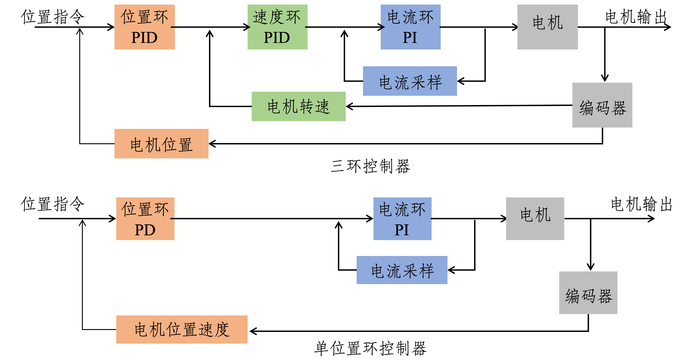
However, for a reinforcement-learning-based robot motion controller, dynamic response is more important. Because the reinforcement learning controller is trained in simulation, we want the data distributions of the simulator and the real robot to be as consistent as possible. Therefore, we want the dynamic characteristics of the real robot to be close to the simulation, and one of the most important parts is keeping the motor dynamics consistent with simulation.
In simulation, motors are all modeled with a PD controller, which is a very ideal controller:
The formula of the PD controller in simulation is the same as the formula of the single position-loop controller above:
But there is one difference: inside the real motor there is a current loop, and there is a coefficient \(K_t\) between current and torque:
Therefore, when using an ENCOS motor, we need to use the force-position control mode described in the manual:
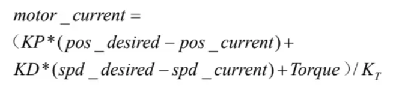
This \(K_t\) is related to the motor current loop. Under normal circumstances, we treat \(K_t\) as a constant, but in reality this parameter is not truly constant. The figure below shows the motor torque-current curve, and we can see that the curve is not perfectly linear. The next two figures are both parameter curves of the ENCOS 6408 motor.
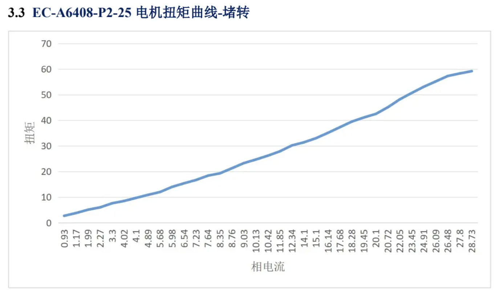
The next figure is the TN curve, which also has a major effect on Sim2Real. In simulation, we usually set only the maximum torque and maximum speed, but in reality the motor's maximum power is constant. The motor cannot reach its maximum speed and maximum torque at the same time, so the TN curve is not rectangular. This affects aggressive motions such as backflips. Therefore, if you want to perform complex motions, you need to add TN-curve constraints in simulation.
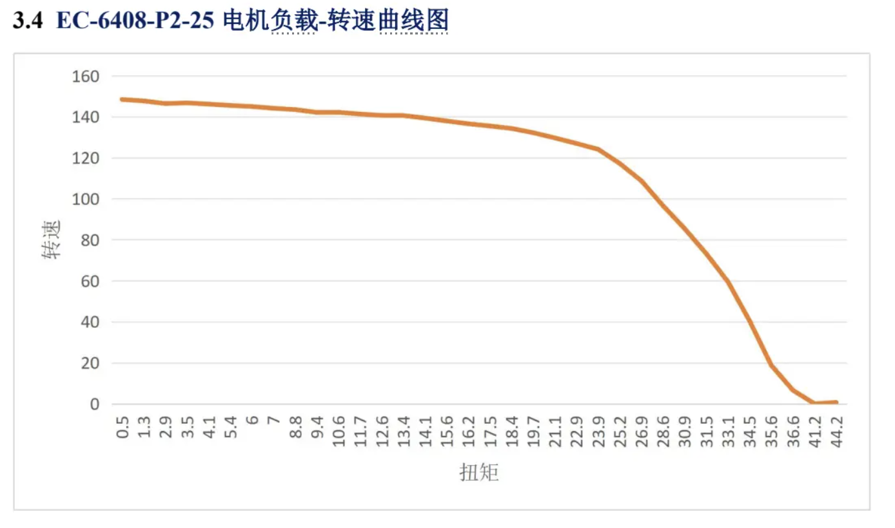
Motor System Identification¶
After understanding the motor controller, we know that the two most important parameters of a single position-loop controller are \(K_p\) and \(K_d\). Once we have a motor, we want to determine whether the real-robot parameters are consistent with the simulation, or in other words, whether the real robot and the simulation are consistent under the same parameter settings, and what differences exist between them. When the motor rotates at low frequency with no load, for example under a very slow sinusoidal signal, the difference between a three-loop controller and a single position-loop controller is not obvious, and the difference between different \(K_p\) and \(K_d\) settings under a single position-loop controller is also small. Therefore, in order to identify \(K_p\) and \(K_d\), we need to drive the motor with a high-frequency signal.
A fairly standard operation is to apply a linear chirp to the motor. In a linear chirp, the instantaneous frequency increases linearly from \(f_{\mathrm{start}}\) to \(f_{\mathrm{end}}\).
This makes it possible to measure the motor's frequency-response characteristics under one set of parameters, and then estimate \(K_p\) and \(K_d\) via linear regression. To make the explanation easier to follow, we will use a relatively well-behaved motor as the example.
1. Basic Motor Parameters¶
| Rated voltage | No-load peak speed | Rated power | Rated torque | Rated speed | Peak torque | Torque constant | Motor weight | Rotor inertia | Gear ratio | Diameter | Length |
|---|---|---|---|---|---|---|---|---|---|---|---|
| 48 V | 132 rpm | 47.840 W | 116.000 Nm | 119.600 rpm | 0.115 Nm | 0.115 Nm/A | 1850 g | 0.159221308 kg·m² | 25 | 100 mm | 79.8 mm |
Note
Some fields in the original table may come from whole-machine or post-reduction joint-side data, such as rated torque, peak torque, rotor inertia, and so on. In the following calculations, we use the joint-side rotational inertia from the test document by default:
2. Second-Order System Model¶
Assume that the robot joint can be simplified as a rotating spring-damper system.
2.1 Variable Definitions¶
| \(I\) or \(J\) | \(\theta\) | \(\dot{\theta}\) | \(\ddot{\theta}\) | \(\tau\) | \(K_p\) | \(K_d\) | \(\zeta\) | \(\omega_n\) | \(f_n\) |
|---|---|---|---|---|---|---|---|---|---|
| Rotational inertia, in \(\mathrm{kg \cdot m^2}\) | Joint angle, in rad | Joint angular velocity, in rad/s | Joint angular acceleration, in rad/s² | Motor output torque, in Nm | Position proportional gain | Velocity derivative gain | Damping ratio | Natural angular frequency, in rad/s | Natural frequency, in Hz |
The relationship between the natural angular frequency and the natural frequency is:
2.2 Rotational Equation of Motion¶
According to the rotational form of Newton's second law:
The output torque of the PD controller is:
When the target position is zero, or when we only analyze the error dynamics:
then:
Substituting this into the rotational dynamics equation gives:
Rearranging terms gives:
Dividing both sides by \(J\):
2.3 Standard Second-Order System Form¶
The standard second-order system is:
By comparison, we obtain:
Therefore:
And because:
we have:
This can also be written as:
2.4 Back-Calculating System Parameters from PD Parameters¶
Given \(K_p\) and \(J\), the natural angular frequency can be recovered as:
Natural frequency:
Damping ratio:
2.5 Settling Time¶
The approximate settling time of a second-order system is:
where:
| \(t_s\) | \(\zeta\) | \(\omega_n\) |
|---|---|---|
| Settling time | Damping ratio | Natural angular frequency |
Note
This formula is usually used to estimate the settling time within a 2% steady-state error band.
2.6 Bandwidth Calculation¶
The bandwidth of a closed-loop second-order system is usually defined as the frequency at which the magnitude of the frequency response drops to \(-3 \mathrm{dB}\), that is, where the amplitude is:
The bandwidth angular frequency of a second-order system is:
Converted to Hz:
3. No-Load Calculated Motor Parameters¶
3.1 Design Input Parameters¶
| Rotational inertia \(J\) | Target natural frequency \(f_n\) | Target natural angular frequency \(\omega_n\) |
|---|---|---|
| 0.159221308 kg·m² | 5 Hz | \(2\pi \times 5\) rad/s |
Natural angular frequency:
Proportional gain:
Substituting in:
which gives:
3.2 Three Sets of Damping-Ratio Parameters¶
The three tests use the following values:
| Test ID | Test 1 | Test 2 | Test 3 |
|---|---|---|---|
| Damping ratio \(\zeta\) | 0.707 | 1.2 | 2.0 |
Derivative gain:
3.3 No-Load Parameter Table¶
| Parameter | Unit | Test 1 | Test 2 | Test 3 |
|---|---|---|---|---|
| Rotational inertia \(J\) | kg·m² | 0.159221308 | 0.159221308 | 0.159221308 |
| Damping ratio \(\zeta\) | - | 0.707 | 1.2 | 2.0 |
| Natural frequency \(f_n\) | Hz | 5 | 5 | 5 |
| Proportional gain \(K_p\) | - | 157.1451 | 157.1451 | 157.1451 |
| Derivative gain \(K_d\) | - | 7.0729 | 12.005 | 20.0083 |
| Gain ratio \(K_p / K_d\) | - | 22.2179 | 13.0900 | 7.8540 |
| Response time \(t_s\) | s | 0.1801 | 0.1061 | 0.0637 |
| Bandwidth \(BW\) | Hz | 5.0 | 2.5 | 1.33 |
| 2x bandwidth end frequency \(F_{\mathrm{end},2x}\) | Hz | 10.0 | 4.99 | 2.67 |
| 2x bandwidth angle \(A_{2x}\) | deg | 8.860409 | 17.744336 | 33.241674 |
| 3x bandwidth end frequency \(F_{\mathrm{end},3x}\) | Hz | 15.0 | 7.49 | 4.0 |
| 3x bandwidth angle \(A_{3x}\) | deg | 5.906939 | 11.829558 | 22.161116 |
| 5x bandwidth end frequency \(F_{\mathrm{end},5x}\) | Hz | 25.0 | 12.49 | 6.66 |
| 5x bandwidth angle \(A_{5x}\) | deg | 3.544164 | 7.097735 | 13.29667 |
4. Chirp Sweep Formula¶
The chirp signal is used to test the dynamic response capability of the system at different frequencies.
4.1 Variable Definitions¶
| \(A\) | \(f_{\mathrm{start}}\) | \(f_{\mathrm{end}}\) | \(T\) | \(t\) | \(V_{\mathrm{limit}}\) | \(k\) |
|---|---|---|---|---|---|---|
| Chirp position amplitude | Start frequency, in Hz | End frequency, in Hz | Total chirp duration, in s | Current time, satisfying \(0 \le t \le T\) | Motor speed limit | Speed margin coefficient |
Recommended chirp range:
Recommended chirp duration:
In testing, one may choose:
5. Linear Chirp Formula¶
5.1 Position Input¶
In a linear chirp, the instantaneous frequency increases linearly from \(f_{\mathrm{start}}\) to \(f_{\mathrm{end}}\).
Position input:
5.2 Phase Function¶
Define the phase as:
5.3 Instantaneous Angular Frequency¶
Taking the derivative of the phase:
The instantaneous frequency is:
5.4 Maximum Velocity¶
The position is:
The velocity is:
Therefore, the velocity amplitude is:
The maximum velocity occurs at \(t = T\), that is, at the highest frequency:
6. Chirp Amplitude Calculation¶
The amplitude needs to be determined according to the motor speed limit and the relevant constraints.
Velocity constraint:
Therefore:
Introducing a safety coefficient \(k\):
In testing, one may choose:
6.1 Converting Radians to Degrees¶
If the unit of \(A\) is rad, then it can be converted to deg as:
6.2 Converting Degrees to Radians¶
If the input command needs rad:
7. No-Load Linear Chirp Test Parameters for the Motor¶
| Test item | Rotational inertia \(J\) | Damping ratio \(\zeta\) | Natural frequency \(f_n\) | \(K_p\) | \(K_d\) | \(K_p/K_d\) | Response time \(t_s\) | Bandwidth \(BW\) | \(F_{\mathrm{end},2x}\) | \(A_{2x}\) | \(F_{\mathrm{end},3x}\) | \(A_{3x}\) | \(F_{\mathrm{end},5x}\) | \(A_{5x}\) |
|---|---|---|---|---|---|---|---|---|---|---|---|---|---|---|
| Test 1 | 0.159221308 kg·m² | 0.707 | 5 Hz | 157.1451 | 7.0729 | 22.2179 | 0.1801 s | 5.0 Hz | 10.0 Hz | 8.860409 deg | 15.0 Hz | 5.906939 deg | 25.0 Hz | 3.544164 deg |
| Test 2 | 0.159221308 kg·m² | 1.2 | 5 Hz | 157.1451 | 12.005 | 13.0900 | 0.1061 s | 2.5 Hz | 4.99 Hz | 17.744336 deg | 7.49 Hz | 11.829558 deg | 12.49 Hz | 7.097735 deg |
| Test 3 | 0.159221308 kg·m² | 2.0 | 5 Hz | 157.1451 | 20.0083 | 7.8540 | 0.0637 s | 1.33 Hz | 2.67 Hz | 33.241674 deg | 4.0 Hz | 22.161116 deg | 6.66 Hz | 13.29667 deg |
8. Experimental Results¶
After testing, the curves are fitted using the following torque model:
The results are shown below. In fact, the direct identification result is not very good: the linearity is not high, and the identified values of \(K_p\) and \(K_d\) are not correct:
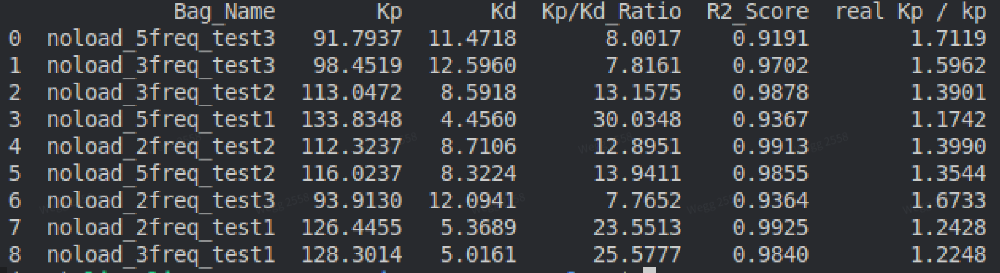
However, if we assume that the motor has a 5 ms delay, we find that the identified values of \(K_p\) and \(K_d\) become very accurate and the linearity is very high. Test 3 has the highest damping ratio; its poorer test result indicates that increasing the damping ratio introduces more nonlinearity in the motor, although this may vary from motor to motor. This suggests that the motor indeed has a delay of around 5 ms.
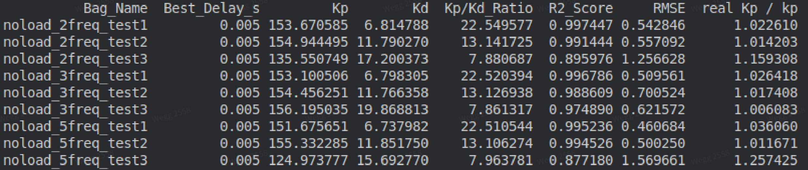
The figure below shows the chirp results. Note that the position unit is radians. The values look large because the initial value was set relatively large.

To compare the difference between simulation and the real robot, we set up a motor in Mujoco with the same rotational inertia and the same \(K_p\) and \(K_d\), sent the same control commands, and compared the response curves of the real motor and the simulated motor. We can see that if the control loop and \(K_p\), \(K_d\) are correct, the simulated and real motor responses should be consistent.

The figure above reveals one difference in the torque response. The real motor shows some spikes because when the motor reverses direction, its speed becomes zero and sliding friction changes into static friction, so the motor torque must increase to keep the motor moving. Gear backlash also has an effect. However, because friction is numerically very small and behaves approximately like noise, it is difficult to identify through system identification, and the resulting linearity will be poor.
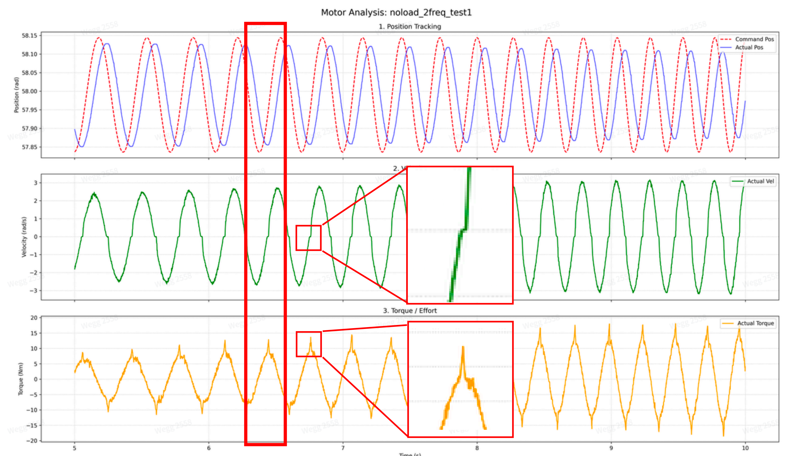
Through motor system identification, we can understand the motor's \(K_p\), \(K_d\), delay, and friction characteristics, all of which affect Sim2Real.
ENCOS Motor¶
We also ran chirp tests on the ENCOS motor, but the results were not as good as those above.
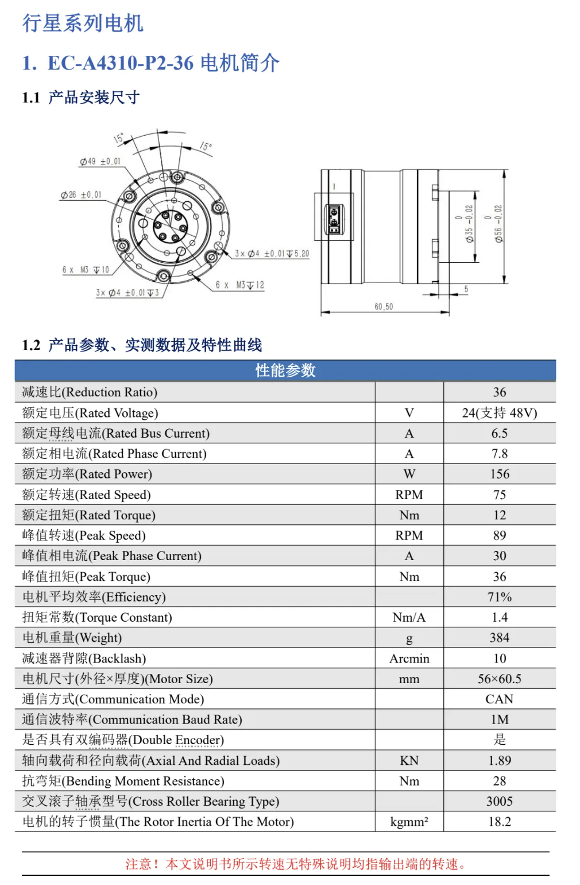
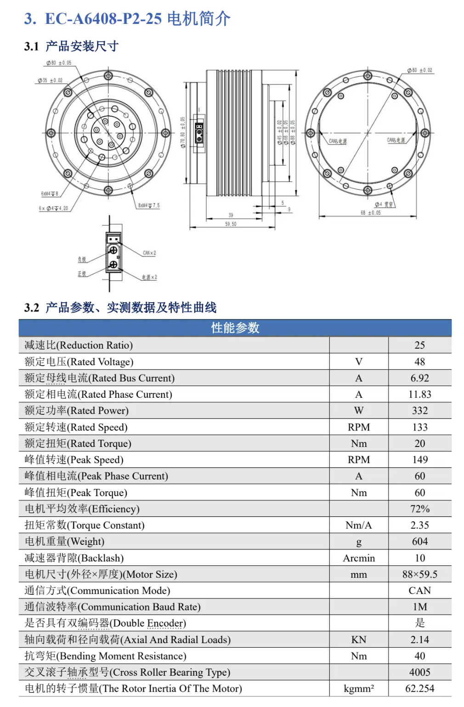
The figures above show the ENCOS motor parameters. We set the natural frequency to 8 and the damping ratio to 1. During chirp tests with different damping ratios, we found that increasing the damping ratio makes the velocity noise of the ENCOS motor more obvious and worsens the linearity, so we chose a damping ratio slightly above critical damping.
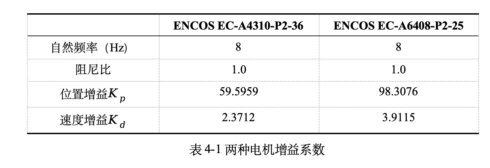
Although the identification linearity of the ENCOS motor is very good, the identified results always differ somewhat from the configured values. The cause has not yet been fully investigated, but the real robot can still make the policy work in practice.
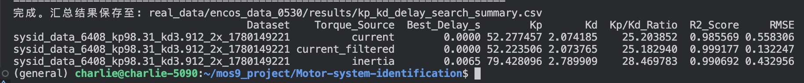
Only when the position error is relatively large do the identified results become more accurate. The figure below shows the system identification results of all motors while the robot is walking. Among them, the identification result of the hip_roll joint is correct and also shows very good linearity:
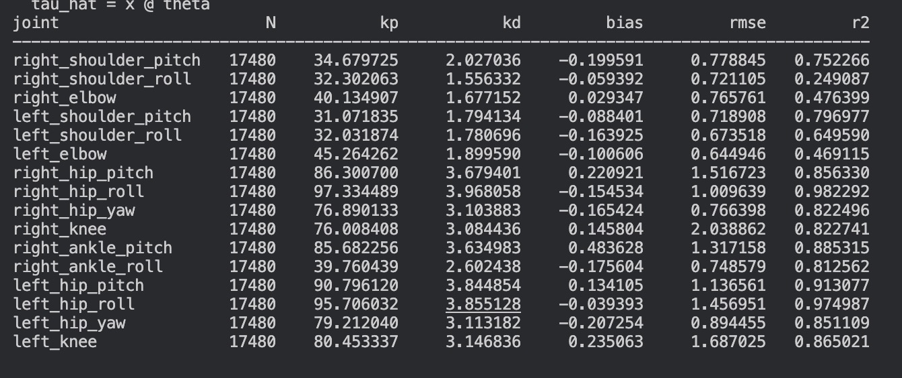
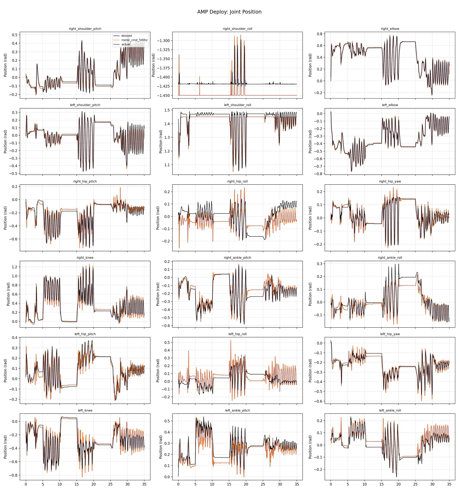